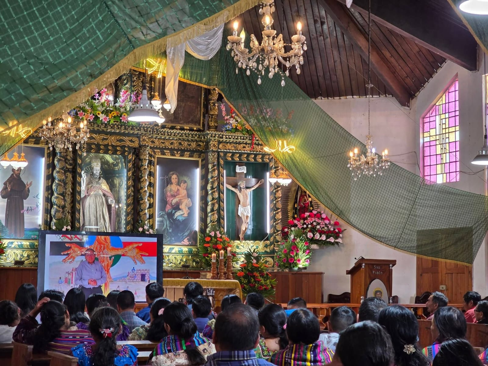
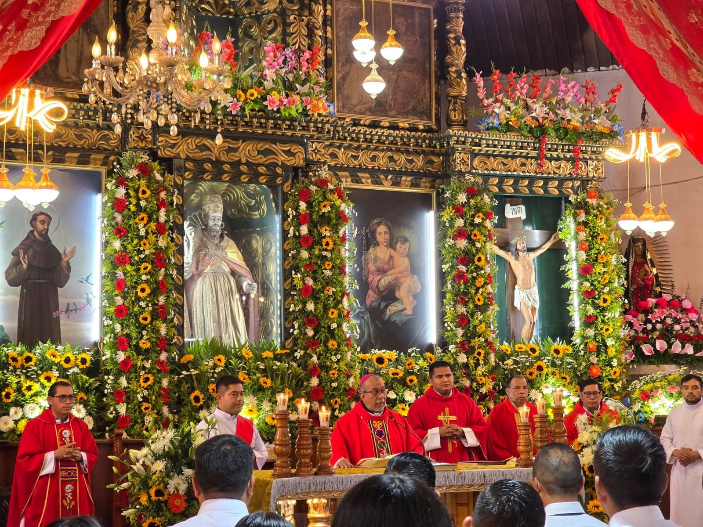
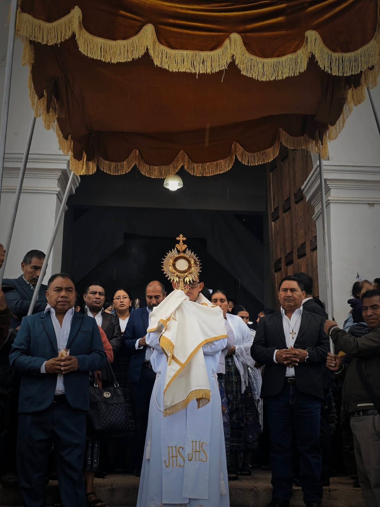
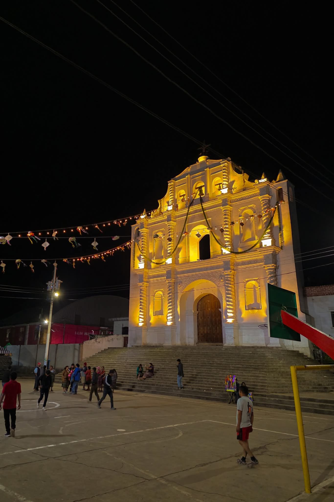
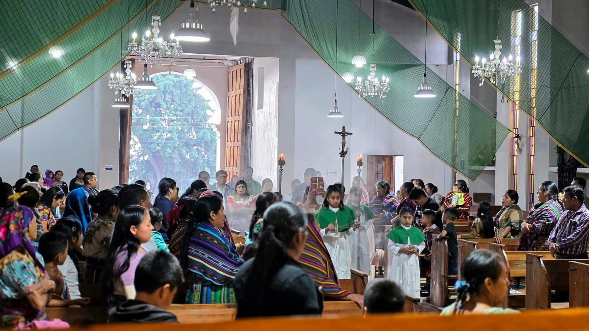

"DONDE DOS O TRES SE REÚNEN EN MI NOMBRE, ALLÍ ESTOY YO EN MEDIO DE ELLOS"
-
Bienvenidos a el sitio oficial de la parroquia San Pedro Apóstol, le invitamos a ser parte de nuestra comunidad y participar en nuestras celebraciónes

"DONDE DOS O TRES SE REÚNEN EN MI NOMBRE, ALLÍ ESTOY YO EN MEDIO DE ELLOS"





Nuestra misión como Iglesia Católica es continuar la obra de Jesucristo através del anuncio del Evangelio, la santificación de la comunidad mediante los sacramentos y el ejercicio activo de la caridad. Como comunidad de creyentes, busca acompañar a las personas en su desarrollo espiritual y moral, promoviendo la paz.
Ser una comunidad celestial misionera, incluyente y comprometida con el desarrollo integral, que promueve la vivencia del Evangelio, fortalece la fe en las familias mayas K'iche' y mestizas, y fomentar la paz, la fraternidad y el respeto a la dignidad humana en medio de su realidad socio-cultural.
Parque Central, San Pedro Jocopilas el Quiché
5173-3811
Martes, Viernes y Fines de Semana de 8:00 a.m. a 5:00pm